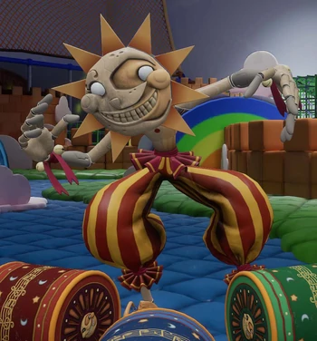
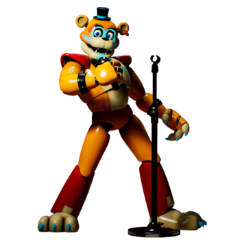
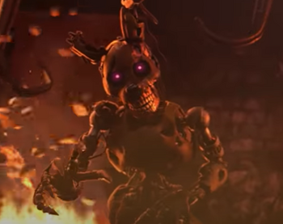

Character Bios
The Daycare Attendant, otherwise known in-game as Sun or Moon, is a Superstar Daycare animatronic that appears in Five Nights at Freddy's: Security Breach.As Sun, the Daycare Attendant is upbeat and energetic, similar to Funtime Freddy.As Moon, the Daycare Attendant is aggressive.
Glamrock Freddy, also known simply as Freddy Fazbear, is Freddy Fazbear's glamrock counterpart who appears in Five Nights at Freddy's: Security Breach as the deuteragonist and ally to the player, Gregory.'s also the only animatronic in the pizzaplex to not be corrupted by Vanny's power. Unlike his counterparts, he actively helps and protects the player from harm.
William Afton is the co-founder of Fazbear Entertainment as well as the main antagonist of the Five Nights at Freddy's series. He is a serial killer who was directly and indirectly responsible for all of the incidents, murders, and tragedies throughout the series. His role in the franchise's story is pivotal.